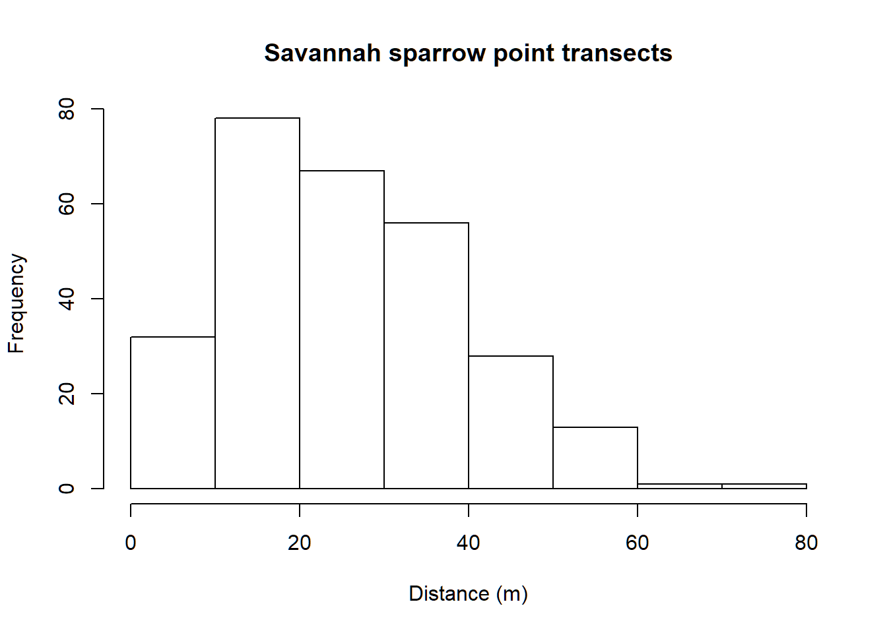
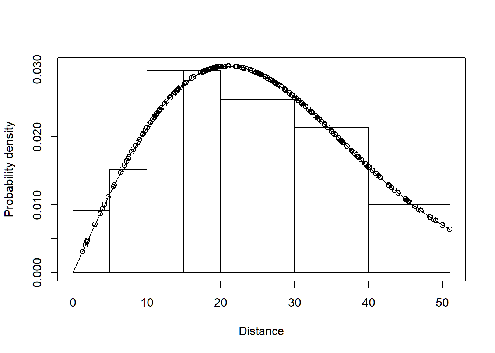
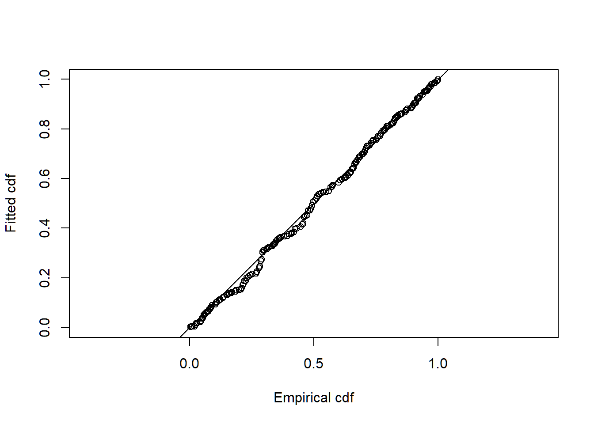

Point transect density estimation
In this exercise, we use R (R Core Team 2019) and the Distance package (Miller 2017, Miller et al. 2019) to fit different detection function models to point transect survey data of savanna sparrows (Passerculus sandwichensis) density and abundance. These data were part of a study examining the effect of livestock grazing upon vegetation structure and consequently upon the avian community described by Knopf et al. (1988).
If you wish to see the code as part of this vignette, click “show all code” in the code button top right. Likewise, there is code provided in a solution at the bottom of the vignette (Solution discussion), to examine after you have made your own efforts.
Steps in this analysis are similar to the steps taken in the line transect analysis of winter wren data.
1 Objectives
- Import a data file
- Fit a basic detection function using the
dsfunction - Plot and examine a detection function
- Fit different detection function forms.
2 Survey design
A total of 373 point transects were placed in three pastures in the Arapaho National Wildlife Refuge in Colorado. Elevation of these pastures was ~2500m. We will not deal with pasture-level analysis of these data in this vignette and will alter the data to remove the strata designations.

Summer grazed pastures along Illinois River Arapaho National Wildlife Refuge, Colorado. Figure from Knopf et al. (1988).
The fields of the Savannah_sparrow_1980 data set are:
- Region.Label - three pastures that constituted sections of the study area. However, for this vignette we are going to make all labels identical. This will treat the data as if they were all detected in the same pasture. The matter of stratification will be taken up in another vignette.
- Area - size of the study region. A place holder, because pasture sizes are not known. Estimates of density and abundance will be equivalent.
- Sample.Label - point transect identifier (total of 273)
- Effort - number of visits to each point
- object - unique identifier for each detected savanna sparrow
- distance - radial distance (metres) to each detection
- Study.Area - only data for savanna sparrow (SASP) are included in this data set
3 Make the data available for R session
This command assumes that the dsdata package has been installed on your computer. The R workspace Savannah_sparrow_1980 contains detections of savanna sparrows from point transect surveys of Knopf et al. (1988).
library(Distance)
data(Savannah_sparrow_1980)
# remove pasture-level identifier in Region.Label
Savannah_sparrow_1980$Region.Label <- "Single_stratum"The code above overwrites the strata designations in the original data to make it appear that all data were derived from a single stratum. This makes the analysis simpler to perform. There are examples of analysis of stratified data in another vignette labelled Stratification.
Examine the first few rows of Savannah_sparrow_1980 using the function head()
head(Savannah_sparrow_1980)The object Savannah_sparrow_1980 is a dataframe object made up of rows and columns. In contrast to the Montrave winter wren line transect data used in the previous vignette, savanna sparrows were not detected at all point transects. Radial distances receive the value NA for transects where there were no detections. To determine the number of detections in this data set, we total the number of values in the distance field that are not NA
sum(!is.na(Savannah_sparrow_1980$distance))4 Examine the distribution of detection distances
Gain familiarity with the radial distance data using the hist() function
hist(Savannah_sparrow_1980$distance, xlab="Distance (m)",
main="Savannah sparrow point transects")Note the shape of the radial distance histogram does not resemble the shape of perpendicular distances gathered from line transect sampling (Section 1.3 of Buckland et al. 2015).
5 Specify unit conversions
With point transects, there are only units of measure associated with the size of the study area and the radial distance measures, because effort is measured in number of visits, rather than distance.
- distance_units
- units of measure for radial distances
- effort_units
- units of measure for effort (NULL for point transects)
- area_units
- units of measure for the study area. Recall this data set has set the size of the study area to be
1, resulting in abundance and density to be equal.
- units of measure for the study area. Recall this data set has set the size of the study area to be
conversion.factor <- convert_units("meter", NULL, "hectare")6 Fitting a simple detection function model with ds
Detection functions are fitted using the ds function and this function requires a data frame to have a column called distance. We have this in our nests data, therefore, we can simply supply the name of the data frame to the function along with additional arguments.
Details about the arguments for this function:
key="hn"- fit a half-normal key detection function
adjustment=NULL- do not include adjustment terms
transect="point"- necessary to indicate this is point transect data
convert.units=conversion.factor- required because, for this example, the radial distances are in metres . Our density estimates will be reported in number of birds per hectare.
truncation="5%"- right truncation (described below)
As is customary, right truncation is employed to remove 5% of the observations most distant from the transects, as detections at these distances contain little information about the shape of the fitted probability density function near the point.
sasp.hn <- ds(data=Savannah_sparrow_1980, key="hn", adjustment=NULL,
transect="point", convert.units=conversion.factor, truncation="5%")On calling the ds function, information is provided to the screen reminding the user what model has been fitted and the associated AIC value. More information is supplied by applying the summary() function to the object created by ds().
summary(sasp.hn)Visually inspect the fitted detection function with the plot() function, specifying the cutpoints histogram with argument breaks. Add the argument pdf so the plot shows the probability densiy function rather than the detection function. The probability density function is preferred for assessing model fit because the PDF incorporates information about the availability of animals to be detected. There are few animals available to be detected at small distances, therefore lack of fit at small distances is not as consequential for points as it is for lines.
cutpoints <- c(0,5,10,15,20,30,40,max(Savannah_sparrow_1980$distance, na.rm=TRUE))
plot(sasp.hn, breaks=cutpoints, pdf=TRUE)7 Specifying different detection functions
Detection function forms and shapes, are specified by changing the key and adjustment arguments.
The options available for key and adjustment elements detection functions are:
- half normal (
key="hn") - default - hazard rate (
key="hr") - uniform (
key="unif") - no adjustment terms (
adjustment=NULL) - cosine (
adjustment="cos") - default - Hermite polynomial (
adjustment="herm") - Simple polynomial (
adjustment="poly")
To fit a uniform key function with cosine adjustment terms, use the command:
sasp.unif.cos <- ds(Savannah_sparrow_1980, key="unif", adjustment="cos",
transect="point", convert.units=conversion.factor, truncation="5%")To fit a hazard rate key function with simple polynomial adjustment terms, then use the command:
sasp.hr.poly <- ds(Savannah_sparrow_1980, key="hr", adjustment="poly",
transect="point", convert.units=conversion.factor, truncation="5%")8 Model comparison
Each fitted detection function produces a different estimate of Savannah sparrow abundance and density. The estimate depends upon the model chosen. The model selection tool for distance sampling data is AIC.
AIC(sasp.hn, sasp.hr.poly, sasp.unif.cos)8.1 Absolute goodness of fit
In addition to the relative ranking of models provided by AIC, it is also important to know whether selected model(s) actually fit the data. The model is the basis of inference, so it is dangerous to make inference from a model that does not fit the data. Goodness of fit is assessed using the function gof_ds.
gof_ds(sasp.hn)9 Model comparison tables
The function summarise_ds_models combines the work of AIC and gof_ds to produce a table of fitted models and summary statistics.
summarize_ds_models(sasp.hn, sasp.hr.poly, sasp.unif.cos,
output="plain")10 References
Buckland, ST, EA Rexstad, TA Marques, and CS Oedekoven. (2015) Distance Sampling: Methods and Applications. Springer International Publishing, Cham.
Knopf, FL, JA Sedgwick, and RW Cannon. (1988) Guild structure of a riparian avifauna relative to seasonal cattle grazing. The Journal of Wildlife Management 52(2): 280–290. https://doi.org/10.2307/3801235.
Miller DL (2017) Distance: Distance Sampling Detection Function and Abundance Estimation. R package version 0.9.7. should be 0.9.9 but not on CRAN https://CRAN.R-project.org/package=Distance
Miller DL, Rexstad E, Thomas L, Marshall L, Laake JL (2019) Distance Sampling in R. Journal of Statistical Software 89(1), 1-28. doi:10.18637/jss.v089.i01 http://doi.org/10.18637/jss.v089.i01.
R Core Team (2018) R: A language and environment for statistical computing. R Foundation for Statistical Computing, Vienna, Austria. https://www.R-project.org/
Arapaho National Wildlife Refuge Savannah sparrow density
library(Distance)
data(Savannah_sparrow_1980)
# remove pasture-level identifier in Region.Label
Savannah_sparrow_1980$Region.Label <- "Single_stratum"
head(Savannah_sparrow_1980)## Region.Label Area Sample.Label Effort object distance Study.Area
## 1 Single_stratum 1 POINT 1 1 NA NA SASP 1980
## 2 Single_stratum 1 POINT 2 1 NA NA SASP 1980
## 3 Single_stratum 1 POINT 3 1 NA NA SASP 1980
## 4 Single_stratum 1 POINT 4 1 NA NA SASP 1980
## 5 Single_stratum 1 POINT 5 1 NA NA SASP 1980
## 6 Single_stratum 1 POINT 6 1 NA NA SASP 1980sum(!is.na(Savannah_sparrow_1980$distance))## [1] 276hist(Savannah_sparrow_1980$distance, xlab="Distance (m)", main="Savannah sparrow point transects")
conversion.factor <- convert_units("meter", NULL, "hectare")
sasp.hn <- ds(data=Savannah_sparrow_1980, key="hn", adjustment=NULL,
transect="point", convert.units=conversion.factor, truncation="5%")
summary(sasp.hn)##
## Summary for distance analysis
## Number of observations : 262
## Distance range : 0 - 51.025
##
## Model : Half-normal key function
## AIC : 2021.776
##
## Detection function parameters
## Scale coefficient(s):
## estimate se
## (Intercept) 3.044624 0.04270318
##
## Estimate SE CV
## Average p 0.321125 0.02296184 0.07150438
## N in covered region 815.881752 71.61193757 0.08777245
##
## Summary statistics:
## Region Area CoveredArea Effort n k ER se.ER
## 1 Single_stratum 1 305.0877 373 262 373 0.7024129 0.04726421
## cv.ER
## 1 0.06728836
##
## Abundance:
## Label Estimate se cv lcl ucl df
## 1 Total 2.674253 0.2625757 0.09818656 2.206264 3.241512 598.5882
##
## Density:
## Label Estimate se cv lcl ucl df
## 1 Total 2.674253 0.2625757 0.09818656 2.206264 3.241512 598.5882cutpoints <- c(0,5,10,15,20,30,40,max(Savannah_sparrow_1980$distance, na.rm=TRUE))
plot(sasp.hn, breaks=cutpoints, pdf=TRUE)
sasp.unif.cos <- ds(Savannah_sparrow_1980, key="unif", adjustment="cos",
transect="point", convert.units=conversion.factor, truncation="5%")
sasp.hr.poly <- ds(Savannah_sparrow_1980, key="hr", adjustment="poly",
transect="point", convert.units=conversion.factor, truncation="5%")
AIC(sasp.hn, sasp.hr.poly, sasp.unif.cos)## df AIC
## sasp.hn 1 2021.776
## sasp.hr.poly 3 2024.578
## sasp.unif.cos 1 2023.178gof_ds(sasp.hn)
##
## Goodness of fit results for ddf object
##
## Distance sampling Cramer-von Mises test (unweighted)
## Test statistic = 0.0835959 p-value = 0.671325summarize_ds_models(sasp.hn, sasp.hr.poly, sasp.unif.cos,
output="plain")## Model Key function
## 1 sasp.hn Half-normal
## 3 sasp.unif.cos Uniform with cosine adjustment term of order 1
## 2 sasp.hr.poly Hazard-rate with simple polynomial adjustment term of order 2
## Formula C-vM $p$-value Average detectability se(Average detectability)
## 1 ~1 0.6713253 0.3211250 0.02296184
## 3 <NA> 0.3636704 0.3495259 0.01456493
## 2 ~1 0.9178066 0.2830338 0.05939264
## Delta AIC
## 1 0.000000
## 3 1.402102
## 2 2.80167410 Notes regarding the Savannah sparrow point transect data
Key differences between analysis of line transect data and point transect data
argument
transectinds()must be set to"point",histogram of radial detection distances is characteristically “humped” because few individuals are available to be detected near the points,
because of the hump shape, plotting to assess fit of data to detection distribution usually assessed via
pdf=TRUEargument added toplot()functionfor the Arapaho National Refuge Savannah sparrow data, the three candidate models all provide adequeate fit to the data and produce comparable estimates of \(P_a\).